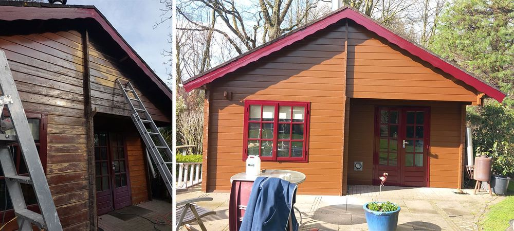

Schilderwerk
Uw woning verfraaien doen we graag, of het nu nieuwbouw is of een pand uit 1850. Rob komt langs om een realistisch advies te geven. Bij klassiekere panden bepaalt u in overleg met ons wat erop gaat.
Uw woning verfraaien doen we graag, of het nu nieuwbouw is of een pand uit 1850. Rob komt langs om een realistisch advies te geven. Bij klassiekere panden bepaalt u in overleg met ons wat erop gaat.

Als perfecte ondergrond. We plakken af, beschermen de vloer met stucloper, kitten de naden en leveren de muur gelatexed op. Ook voor glas vervangen kunt u bij ons terecht.

Houtrot? Ben er op tijd bij. Het eerste bezoek is gratis en alle medewerkers hebben een Houtrotsanerings-certificaat. Hersteld werk wordt meteen geschilderd.
Ook dakkapellen: Vlemmix doet vanuit de hoogte. Laat een inspectie doen voordat het erger wordt. Nieuw: zandstralen en spuiten van hekwerk.
